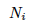
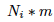
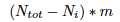
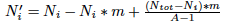
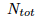
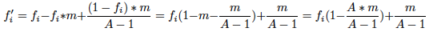
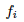
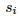
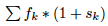
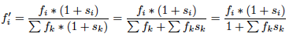

|
Simulation Genomics
|
|
Simulation Genomics
|
-e output file (default: terminal) -r number repeats (default: 3) -g number generations (default: 10) -n number individuals (default: 100) no flag alleles frequencies (default: 0.1 0.2 0.3 0.4)
Initially we only make a simple model of population genetics using the Wright Fisher model: there is population of N individual, they mate randomly and "mix" their DNA to produce the next generation of N individual
We only model genetic drift, no selection, mutation, migration and no change in population size. For this basic model we don't need to take into consideration the sex of the individuals and we can even only take into consideration the N*2 alleles and not the fact that they are grouped by 2.
-m mutation probability (default: 0)
To introduce mutation (probability of mutating: m) we just need to substract to the number of each allele  the number of alleles which mutates  and add the number of the alleles which mutate into which is the number of other alleles times m  divided by the number of alleles in which they can mutate (note that you can't mutate into you) so:  finally we divide by the number of total alleles  to obtain frequencies:

-s alleles fitnesses (default: 0 0 0 ...)
To introduce natural selection we just need to multiply  by a  which can be between -1 and infinity (0 if no selection) and then in order to have a constant population size you divide by  so:

-b bottleneck effect flag (default: no)
The bottleneck effect is a sharp reduction of the population size due to envirenmental events (earthquakes, fires ...) or human activities (genocides...). It enables a huge effect of genetic drift (random selection). In this case it creates a natural disaster which randomly kills 90% of the population.
-a sickle cell anemia flag (default: no)
In this "main" extension we wanted to make a model of genetic population more complex than the basic model. We chose to study the population genetics of sickle cell disease while taking into account malaria:
 1.8.12
1.8.12